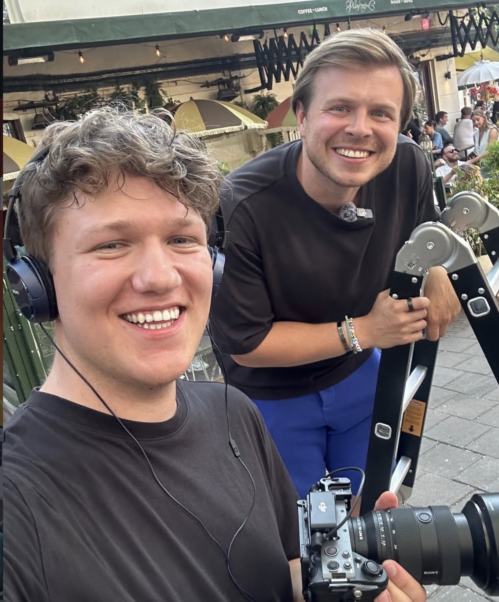

About Me
Gabriel Grassmayr
Adventure Filmmaker. Storyteller. Creator.
Gabriel captures stories where real adventure happens — from fast-paced productions to cinematic moments in extraordinary environments. His work combines emotion, movement and atmosphere for brands, documentaries and digital storytelling.
- Based in Austria
- 21 Years Old
- Adventure Filmmaker & Photographer
- Extreme Sports, Travel & Storytelling
- Worked with Red Bull, FUNK & Ripple
- Co-Founder of MC Media
Behind the Lens

